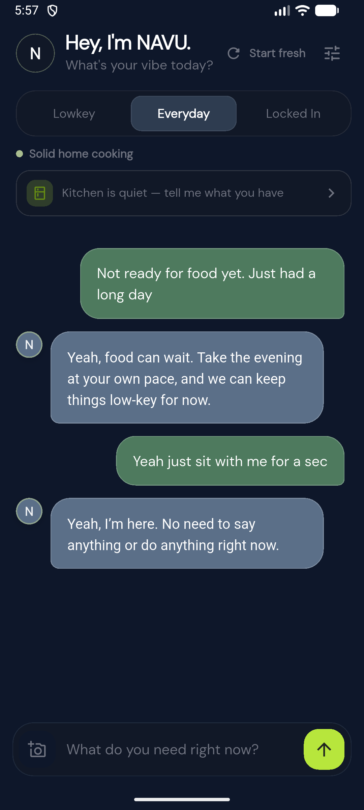
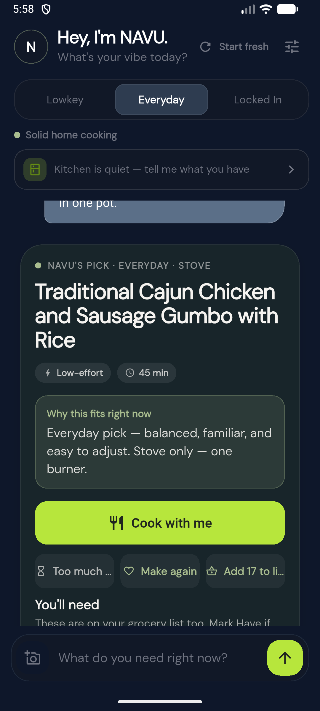
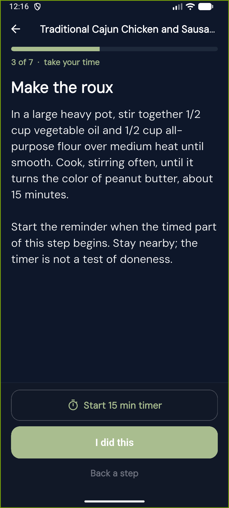
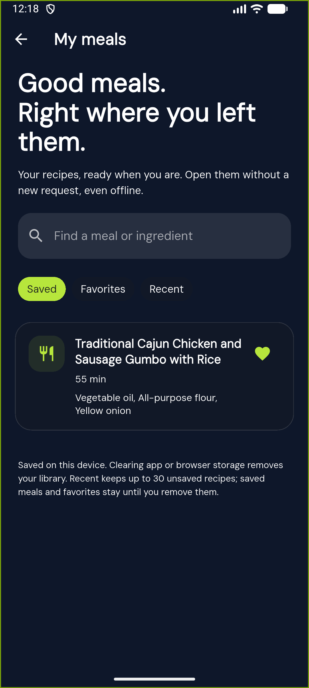

01
Talk first
Talk the way you normally talk.
No special prompt. Be brief, messy, casual, or completely yourself. NAVU follows your energy without guessing your identity.
Company first · Food when you want it
NAVU meets you where you are. It can simply keep you company, then help with breakfast, lunch, dinner, or a snack when you are ready.

A real moment with NAVU
NAVU does not force every message toward food. It listens first, follows the conversation, and moves with you when you decide you are ready to eat.
Real-time product demo
Watch the typing, live responses, meal creation, and cooking guidance in the working app. Pauses have been shortened for viewing. This recording shows an earlier build; the screenshots below show the updated cooking and saved-meal experience.
Real conversations. Real meals.
Speak the way you normally speak. NAVU can stay present without turning the moment into a food prompt.
Talk first
No special prompt. Be brief, messy, casual, or completely yourself. NAVU follows your energy without guessing your identity.
Your request stays intact
NAVU carries the dish and details through the conversation. Ask for something traditional, quick, low-effort, or specific to a region, and the meal stays true to that request.

Stay with me
Keep the recipe beside you as you cook. See the current step, heat guidance, and safety notes, with a timer when the recipe calls for one. Move forward when you are ready.

Good meals are worth keeping
A shopping list should not outlast the recipe it came from. Save a meal, pick up what you need, and come back to the same ingredients and instructions.
My meals brings saved recipes, favorites, and recent meals together. Find one by its name or an ingredient.
Add ingredients to your list and NAVU saves the meal with them. Your list gives you a way back to the recipe.
Open the recipe you saved, not a newly generated replacement. Starting a fresh conversation leaves your saved meals and shopping list in place.
Shown in the latest development build. Meals are saved on this device, not synced between devices. Clearing app or browser storage removes them.

Your kitchen, your equipment
Tell NAVU whether you use gas, electric coil or radiant, or induction. Cooking guidance takes that into account, from how quickly the heat changes to the cookware you need.
Not sure? That is an option too. Follow the recipe's cooking cues and your appliance instructions, not a guessed dial setting.
A world of home cooking
There is no fixed menu to scroll through. Ask for a dish, a food tradition, or the kind of flavor you want. NAVU turns that into one complete meal that fits the moment.
Breakfast, lunch, dinner, and snacks that respect the food you asked for.
From a traditional gumbo to a quick weeknight plate.
Ask for a specific country, dish, ingredient, or style.
From ramen and Filipino comfort food to curries and rice dishes.
Familiar staples or something new, matched to your time and effort.
Specific food traditions matter more than a generic label.
“Traditional gumbo.”
“A Puerto Rican breakfast.”
“Something Korean and low-effort.”
Why it feels different
NAVU brings conversation, food knowledge, memory, and safety into one experience. It follows what you mean, keeps important details in view, and helps you take the next step without making you learn how to talk to it.
NAVU can tell the difference between needing a little company, wanting a meal now, and trying to use what is already in the kitchen.
NAVU responds to how you speak in the moment. It does not need to guess your background or identity to meet you there.
Save a meal you want to make, favorite one you loved, and come back to the same recipe when you are ready.
When you are ready, move from a conversation to a meal, a connected shopping list, and cooking help that fits your kitchen.
Your vibe changes how NAVU responds and what it recommends.
Gentle
Easy wins only. Still something satisfying when your energy is low.
Home
Solid home cooking. Balanced, familiar, easy to adjust.
Worth it
More technique and deeper flavor when you want to put in the work.
Your grocery list stays connected to the meals you are making. Keep what you have under Have and what you need under Need. A new suggestion will not replace the shopping list you already started.
Real help comes first
If someone says they may be in crisis, NAVU pauses food suggestions and points them toward real-world support. In the United States and its territories, that includes calling or texting 988 for free, confidential help from a skilled crisis counselor.
NAVU does not pretend to replace professional care. If there is immediate danger, it directs the person to call 911.
Learn what to expect from 988The promise
No subscriptions, paid features, or ads in your conversation. Helpful technology should work for people, not use their needs against them. Your food preferences are yours to choose, and NAVU never makes assumptions about who you are.
NAVU can support itself through clearly labeled business activity outside the private conversation. Revenue will never unlock features, change its recommendations, or turn what you share into ad space.
Mobile app
NAVU is in active development. Verified store links will appear here when the app is ready to download.
Cook-together guidance uses familiar measurements such as cups, tablespoons, and °F.
{kind=link}